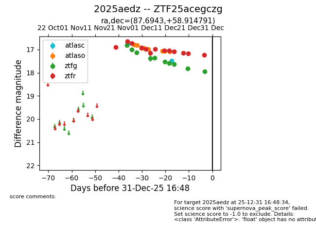
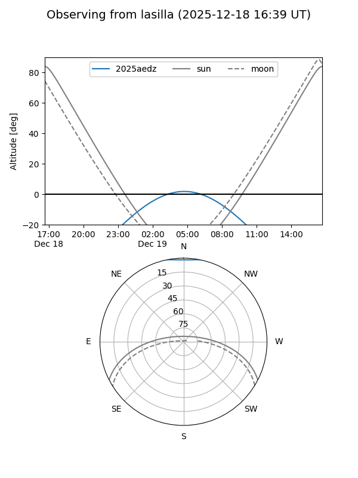
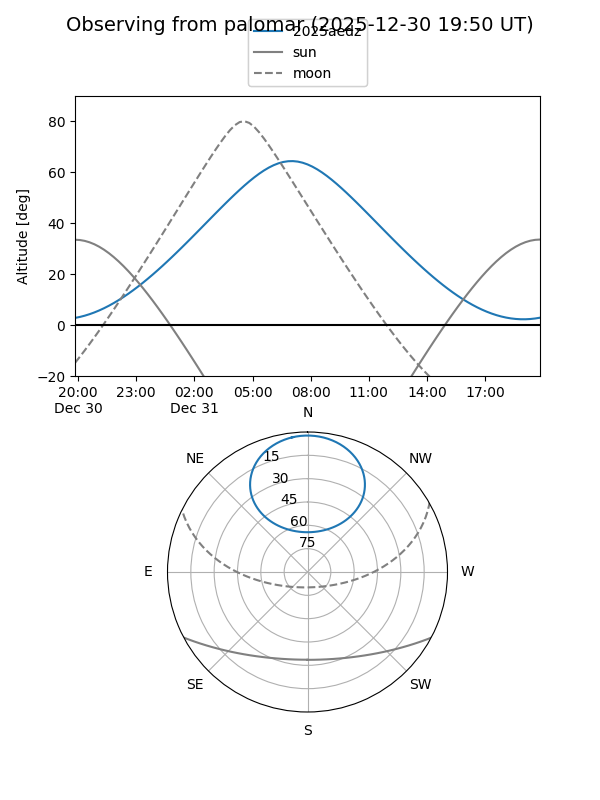

2025aedz
Target 2025aedz at 2025-12-21 06:18
Aliases and brokers:
FINK: fink-portal.org/ZTF25acegczg
Lasair: lasair-ztf.lsst.ac.uk/objects/ZTF25acegczg
ALeRCE: alerce.online/object/ZTF25acegczg
TNS: wis-tns.org/object/2025aedz
YSE: ziggy.ucolick.org/yse/transient_detail/2025aedz
alt names
ZTF25acegczg (ztf,fink_ztf)
2025aedz (tns,yse)
Coordinates:
equatorial (ra, dec) = 87.6943,+58.91479
equatorial (HMS+DMS) = 05:50:46.63,+58:54:53.25
galactic (l, b) = (154.1032,+15.68183)
Flags:
Photometry:
last atlasc=17.50, atlaso=17.09, ztfg=17.82, ztfr=17.15
2 atlasc, 9 atlaso, 9 ztfg, 11 ztfr detections
Lightcurve

Visibility


Additional plots